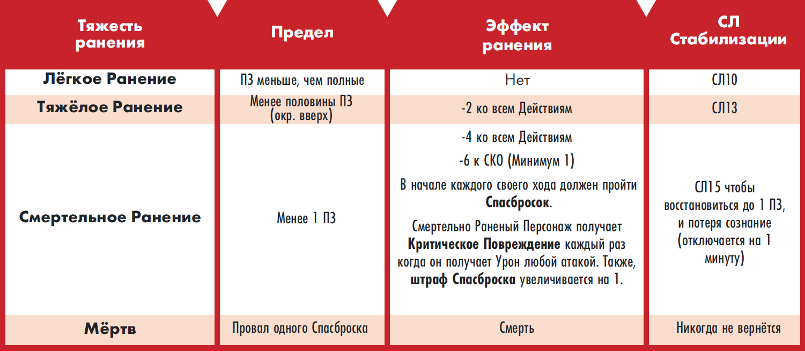
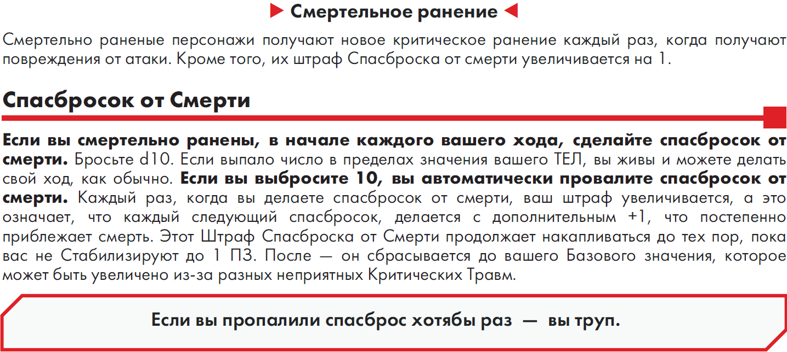
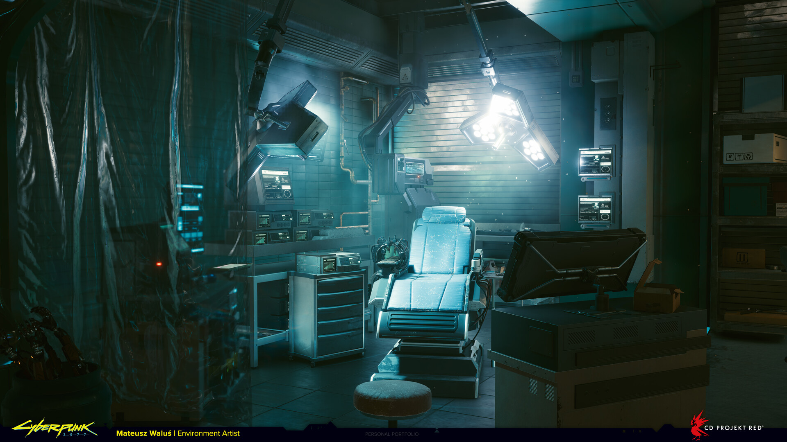

Травмы
Ранения:


Критические повреждения Тела
| 2d6 | Травма | Эффект от повреждения | Первая помощь | Лечение |
|---|---|---|---|---|
| 2 | Оторванная рука | Лишился руки. Все что держали этой рукой, теперь на земле. Штраф Спасброска увеличивается на 1. | Нет | Хирургия СЛ 17 |
| 3 | Оторванное запястье | Лишился запястья. Все что держали этой рукой, теперь на земле. Штраф Спасброска увеличивается на 1. | Нет | Хирургия СЛ 17 |
| 4 | Разрыв легкого | -2 к СКО(Минимум 1) Штраф Спасброска увеличивается на 1. | Парамедик СЛ15 | Хирургия СЛ 15 |
| 5 | Перелом ребер | В конце каждого хода, в котором вы передвигались пешком более 4 метров, вы получаете Бонусный Урон по ПЗ от этого повреждения. | Парамедик СЛ13 | Парамедик СЛ 15 или Хирургия СЛ 13 |
| 6 | Перелом руки | Сломанной рукой нельзя пользоваться. Все что держали этой рукой теперь на земле. | Парамедик СЛ13 | Парамедик СЛ 15 или Хирургия СЛ 13 |
| 7 | Инородное тело | В конце каждого хода, в котором вы передвигались пешком более 4 метров, вы получаете Бонусный Урон по ПЗ от этого повреждения. | Первая Помощь или Парамедик СЛ 13 | Быстрая Помощь устраняет эффект от повреждения. |
| 8 | Перелом ноги | -4 к СКО (Минимум 1). | Парамедик СЛ13 | Парамедик СЛ 15 или Хирургия СЛ 13 |
| 9 | Разрыв мышц | -2 к Ближним Атакам. | Первая Помощь или Парамедик СЛ 13 | Быстрая Помощь устраняет эффект от повреждения. |
| 10 | Травма позвоночника | В свой следующий ход вы можете только Перемещаться. Штраф Спасброска увеличивается на 1. | Парамедик СЛ15 | Хирургия СЛ 15 |
| 11 | Раздробленные пальцы | -4 ко всем Действиям связанным с этой рукой. | Парамедик СЛ13 | Хирургия СЛ 15 |
| 12 | Оторванная нога | Лишились ноги. -6 к СКО(Минимум 1). Вы не можете Уклоняться от атак. Штраф Спасброска увеличивается на 1. | Нет | Хирургия СЛ 15 |
Критические повреждения Головы
| 2d6 | Травма | Эффект от повреждения | Первая помощь | Лечение |
|---|---|---|---|---|
| 2 | Потеря глаза | Лишился глаза. -4 к дальним атакам и Проверкам Восприятия. Штраф Спасброска увеличивается на 1. | Нет | Хирургия СЛ 17 |
| 3 | Черепно-Мозговая Травма | -2 ко всем Действиям. Штраф Спасброска увеличивается на 1. | Нет | Хирургия СЛ 17 |
| 4 | Повреждение глаза | -2 к дальним атакам и проверкам Восприятия, использующим Зрение. | Парамедик СЛ15 | Хирургия СЛ 13 |
| 5 | Сотрясение Мозга | -2 ко всем Действиям. | Первая Помощь или Парамедик СЛ 13 | Быстрая Помощь устраняет эффект от повреждения. |
| 6 | Перелом челюсти | -4 ко всем Действиям связанным с речью. | Парамедик СЛ13 | Парамедик или Хирургия СЛ 13 |
| 7 | Инородное тело | В конце каждого хода, в котором вы передвигались пешком более 4 метров, вы получаете Бонусный Урон по ПЗ от этого повреждения. | Первая Помощь или Парамедик СЛ 13 | Быстрая Помощь устраняет эффект от повреждения. |
| 8 | Хлыстовая травма | Штраф Спасброска увеличивается на 1. | Парамедик СЛ13 | Парамедик или Хирургия СЛ 15 |
| 9 | Перелом черепа | Прицельные выстрелы в голову умножают урон, который проходит через твои ОС, на 3 вместо 2. Штраф Спасброска увеличивается на 1. | Парамедик СЛ 15 | Парамедик или Хирургия СЛ 15 |
| 10 | Повреждение слуха | В конце каждого хода, в котором вы передвигались пешком более 4 метров, в свой следующий ход ты не можешь перемещаться. Также получаешь -2 к проверкам Восприятия, использующим слух. | Парамедик СЛ13 | Хирургия СЛ 13 |
| 11 | Травма трахеи | Ты не можешь говорить. Штраф Спасброска увеличивается на 1. | Нет | Хирургия СЛ 15 |
| 12 | Оторванное ухо | Лишился уха. Каждый раз, когда ты в свой ход пешком передвигался дальше 4 метров, в свой следующий ход ты не можешь перемещаться. Также ты получаешь -4 к проверкам Восприятия, использующим слух. Штраф Спасброска увеличивается на 1. | Нет | Хирургия СЛ 17 |
Первобытные травмы
В оригинале это Fossilized - окаменевшие.
В контексте DLC о динозаврах и коллаборации с игрой о первобытных людях и динозаврах нам показалось наиболее разумной адаптацией этого названия как "Первобытные Травмы".
Немного характеризует те ужасные последствия от удара динозавра по вам.
Всякий раз, когда динозавр выбрасывает случайное критическое ранение, пропустите таблицу в основной книге правил
Cyberpunk RED и обратитесь к таблице Первобытных критических ранений, чтобы определить, какое именно критическое ранение
он нанесет своей цели. Прицельные критические ранения, нанесенные динозаврами, например, прицельные атаки или
специальные приемы боевых искусств, остаются без изменений.
Первобытные критические удары не должны наноситься современными людьми во время обычной игры, если только рефери не
захочет, чтобы они были более… похожи на пещерных людей… в этом случае рекомендуется, чтобы персонажи, не являющиеся
динозаврами, получали Первобытные критические удары всякий раз, когда три или более бросков кубиков для определения
урона от рукопашной атаки выпадают на 6. Если вы также используете подсистему Таро Найт-Сити, вам следует вытянуть карту
за первый критический удар на 666 за игровую сессию — независимо от источника — и бросать кубики по таблице Первобытных
критических ударов для определения любых последующих бросков урона на 666 единиц урона от рукопашных атак.
Первобытные суперкритические удары возникают из-за чрезвычайно удачных бросков по таблице Первобытных критических
ударов.
Первобытные травмы:
| 2d6 | Травма | Эффект от повреждения | Первая помощь | Лечение |
|---|---|---|---|---|
| 2 | Ловкое расчленение | Выберите одну из рук или ног жертвы для отсечения. Эта конечность ведёт себя в соответствии с аналогичной Критической Травмой Тела. | Н/Д | Хирургия Сл17 |
| 3 | Коллапс грудной клетки | -3 СКО (минимум 1). Базовый штраф спасбросока от смерти увеличивается на 2. | Парамедик Сл17 | Хирургия Сл17 |
| 4 | Множественные Сотрясения | Прицельные выстрелы в голову умножают урон, проходящий через ваши ОС, на 3 вместо 2. Рукопашные атаки, направленные против вас, наносят критические травмы, когда на кубиках урона выпадает на одну шестерку меньше, чем обычно. | Первая помощь или Парамедик Сл17 | Хирургия Сл17 |
| 5 | Множественные вывихи | Вы не можете делать прицельные выстрелы или уклоняться от атак. Базовый штраф спасброска от смерти увеличен на 2. |
Парамедик Сл15 | Быстрое лечение снимает Эффект травмы навсегда |
| 6 | Сломанное тело | Выберите одну из рук или ног жертвы для перелома. Эта конечность ведёт себя в соответствии с аналогичной Критической Травмой Тела. | Парамедик Сл13 | Парамедик Сл15 или Хирургия Сл13 |
| 7 | ОБОСТРЕНИЕ | Бросок по таблице супер критических-доисторических травм. | Н/Д | Н/Д |
| 8 | Разрыв связок | -1 к СКО, РЕФ, ЛОВК (Мин. 1). Базовый штраф спасброска от смерти увеличен на 2. |
Первая помощь или Парамедик Сл13 | Быстрое лечение снимает Эффект травмы навсегда |
| 9 | Обширный шок | В следующем ходу вы не можете совершить Движение. Каждый раз, когда вы перемещаетесь пешком более чем на 4 м/ярда за ход, вы не можете совершить Движение в свой следующий ход. |
Парамедик Сл13 | Хирургия Сл13 |
| 10 | Зияющая рана | В следующем ходу вы не можете совершить Действие, но можете совершить Движение. -2 к СКО (мин. 1). Базовый штраф к спасброску от смерти увеличивается на 2. | Первая помощь или Парамедик Сл15 | Быстрое лечение снимает Эффект травмы навсегда |
| 11 | Вдавленная ключица | -2 к РЕФ, -2 к ЛОВК (мин. 1). | Первая помощь или Парамедик Сл15 | Рваная рана |
| 12 | Рваная рана | В следующем ходу вы не можете совершить Действие или Движение. Вы не можете уклоняться от атак. Базовый штраф к спасброску от смерти увеличивается на 2. | Первая помощь или Парамедик Сл15 | Быстрое лечение снимает Эффект травмы навсегда |
Первобытные суперкритические удары:
| 2d6 | Суперкритический удар | Эффект |
|---|---|---|
| 2 | БЕЗУМНЫЙ | До конца боя атакующий получает дополнительный ход в начале очереди инициативы. Если выпадает «БЕЗУМНЫЙ» второй раз, перебросьте кубик. |
| 3 | РАЗРУШАЮЩИЙ | До конца боя, всякий раз, когда одна из атак атакующего (включая эту) должна была бы снять броню, броня снимается дополнительно на 4 ОС. |
| 4 | МОГУЩЕСТВЕННЫЙ | До конца боя рукопашные атаки атакующего наносят на 1d6 больше урона. |
| 5 | РЕШИТЕЛЬНЫЙ | Атакующий получает 15 ПЗ. До конца боя броня атакующего не может быть разрушена. |
| 6 | КАЛЕЧАЩИЙ | До конца боя штраф за прицельные выстрелы атакующего снижается до -3. Если выпадает «КАЛЕЧАЩИЙ» второй раз, перебросьте кубик. |
| 7 | УНИЧТОЖАЮЩИЙ | Дважды бросьте кубик по этой таблице, пока не получите два результата, не являющихся УНИЧТОЖАЮЩИМ, затем выберите, какой эффект принять. |
| 8 | КРОВАВЫЙ | До конца боя все персонажи, уклоняющиеся от рукопашных атак атакующего, делают это со штрафом -3. |
| 9 | ТОЧНЫЙ | До конца боя прицельные выстрелы, сделанные атакующим, наносят 2d6 дополнительного урона. |
| 10 | КАРАЮЩИЙ | До конца боя атакующий может совершить дополнительное Действие при первом нанесении урона врагу в каждом раунде. |
| 11 | ВДОХНОВЛЁННЫЙ | До конца боя атакующий может выбрать предпочтительный результат при броске по таблице критических ранений вместо броска кубика, и его атаки наносят критические ранения всякий раз, когда даже один бросок D6 на урон приводит к 6. |
| 12 | УСИЛЕННЫЙ | Атакующий совершает еще один ход сразу после этого. В этот ход он бросает d20 вместо d10 при проверке атаки. |
